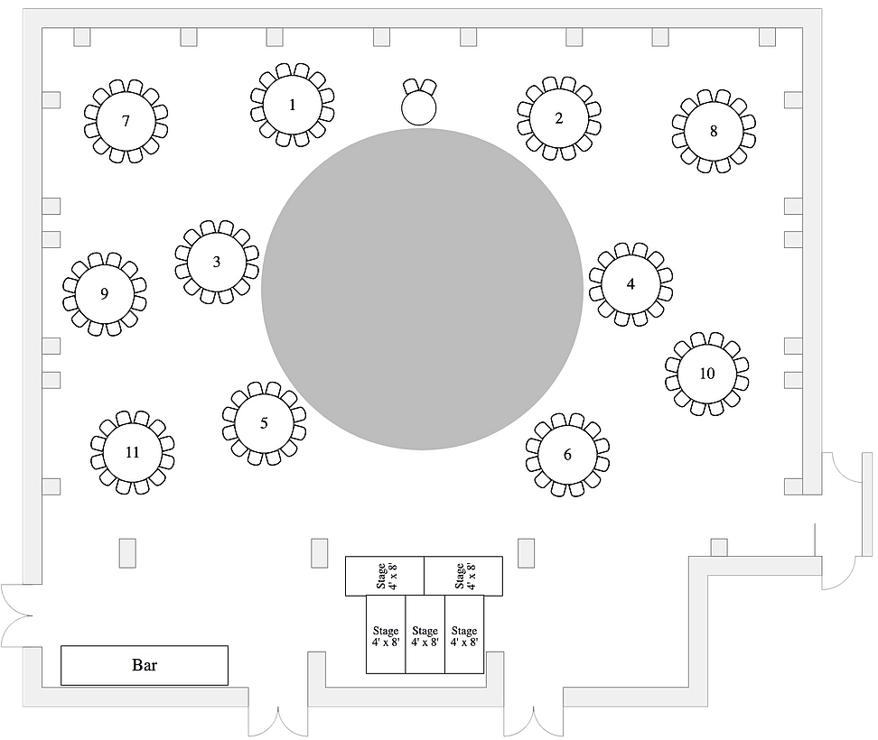

<app-splash-screen>
  [animationType] = " 'slide-left' "
  [duration] = "3"
  [animationDuration] = "3"
</app-splash-screen>

<div class = "main-app-container">
  <meta name="viewport" content="width=device-width, initial-scale=0.8, maximum-scale=1.0, user-scalable=yes" />
  <div class="container">
    <div >
       
    </div>
    <div class = "colortext" >
      Reception Seating 
    </div>
<!-- 
    <div class = "search">
      Name: 
    </div>
    <div class = "box">
      <input>
    </div>
-->
    <div class="md-form" style="padding-top: 10px; padding-bottom: 5px;" >
      <input type="search" [(ngModel)]="searchText" placeholder="Search Name " 
      style="padding-left: 30%; 
      height: 3rem;
      font-size: 20px;" 
      size="25px" >
    </div>

    <ul *ngFor="let data of dataset | filter: searchText" class = "list-set" > <!-- ngIf = showList can hide the list but need to  find a way make it visible-->
      <li  style="font-size: 30px;">{{data}}</li>
    </ul>

    


  </div>
</div>
<!--
  If centering in this manner is not to liking remove class = "container" from h1, li, and img
-->


<!--

<div class="md-form">
  <input type="search" [(ngModel)]="searchText" placeholder="Search Name">
</div>

<ul *ngFor="let data of dataset | filter: searchText" class = "list-set">
  <li>{{data}}</li>
</ul>

-->


<router-outlet></router-outlet>
